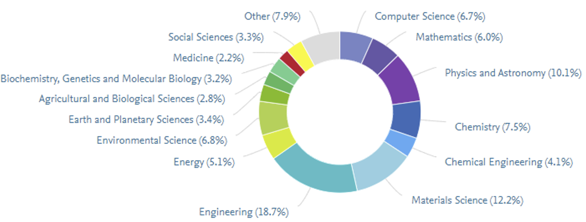
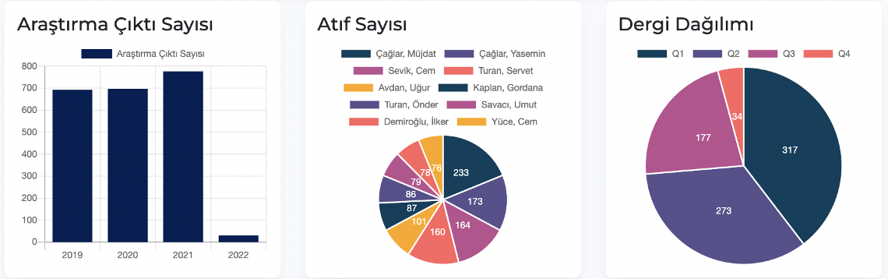
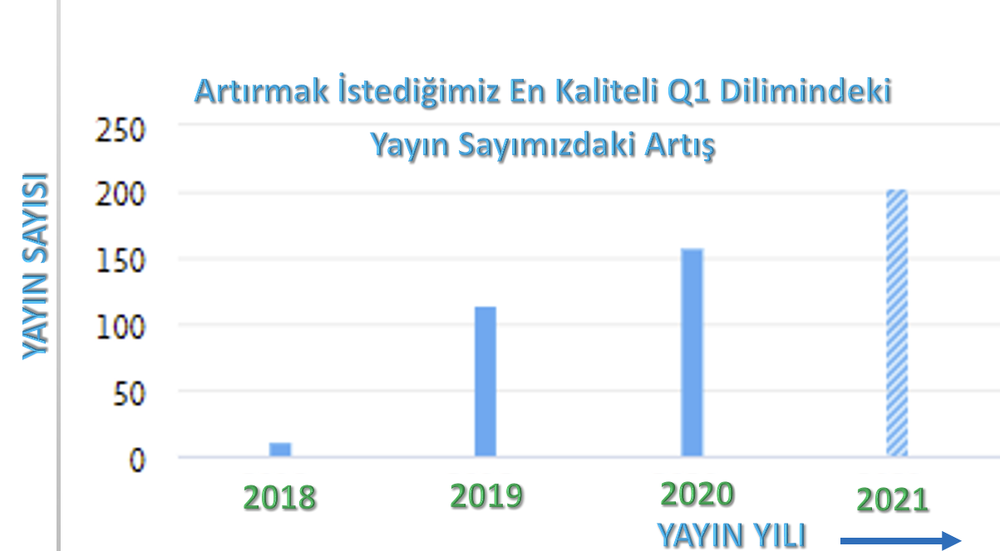
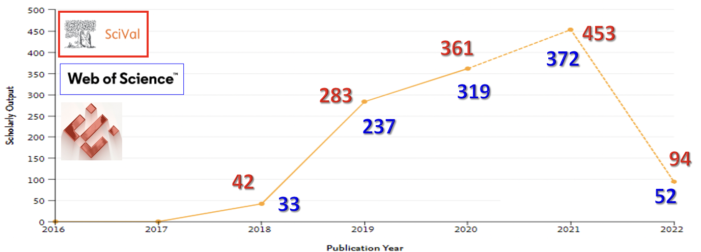

Research
Research and Graduate Processes Directorate (ALSD), in line with the mission, vision, core values
and policies of Eskişehir Technical University, ensures the development of talents and skills
in the field of research in harmony, in terms of quantity and quality, which will enable the
University to rank at the top in national and international environments. was established in
order to support students in obtaining research and technology outputs and raising qualified
researchers, and is responsible for the management of the research ecosystem at our university.
Research Areas
Distribution percentages of publications by fields:

Number of research output, number of citations and journal distribution, respectively:

The increase in the number of publications in the highest quality Q1 slice that we want to
increase:

Our publication numbers that have increased over the years:

The Research and Graduate Processes Directorate
The Research and Graduate Processes Directorate is responsible for the coordination of the entire
research ecosystem of our University and the monitoring of its outputs, and tries to carry out
educational and research activities interactively with all its stakeholders, from undergraduate
students to graduates, from academicians to industry employees, in order to activate research
elements and produce value-creating research outputs. The objectives of the Research and
Graduate Processes Directorate determined in the strategic plan:
(i) Increasing the efficiency and technological adequacy of the existing research infrastructure,
(ii) To increase the quality of research outputs,
(iii) Developing output and impact-oriented collaboration networks, and
(iv) To increase the number and budget of external projects.